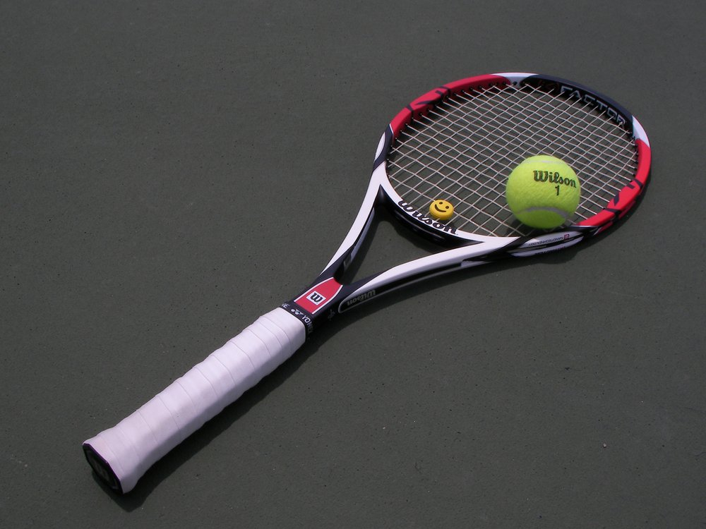

How to Get Started with Tennis

Essential Equipment

Before you step onto the court you'll need a few key items. Fortunately beginners don’t have to spend a fortune—entry‑level gear is affordable and widely available. Here’s what to consider when assembling your kit.
- Racquet: Choose a light, comfortable racquet. Starter models under $100 are perfectly suitable, and many come pre‑strung. Look for a standard 27‑inch length and make sure the grip fits your hand—your thumb should just reach the knuckle below your middle finger when gripping the handle.
- Balls: Stick with standard pressurized tennis balls. Use regular‑duty balls on clay and extra‑duty on hard courts. For young kids, softer training balls bounce lower and travel slower, which makes learning easier.
- Clothing: Wear breathable, moisture‑wicking athletic gear that allows unrestricted movement. Lightweight polyester or nylon fabrics are ideal.
- Shoes: Tennis involves quick lateral movements, so dedicated tennis shoes with proper support are important. Look for non‑marking soles and court‑specific tread patterns to protect both your feet and the playing surface.
- Other: Don’t forget sun protection and a refillable water bottle. Hats, sunglasses and sunscreen help you stay safe during outdoor play, and staying hydrated will keep you feeling your best.
Basic Rules & Scoring
Tennis is played as a series of points, games and sets. A player wins a set by winning at least six games and leading by two. Each game consists of a sequence of points, and the first player to win four points with a margin of two wins the game. Rather than counting 0, 1, 2 and 3, tennis uses the traditional terms “love,” “15,” “30,” “40” and “game” to announce the server’s points.
Finding Courts & Clubs
Most communities have public tennis courts located in parks or schools. You can also search for clubs, recreation centres or community programs that offer lessons and court rentals. The United States Tennis Association’s Find a Court tool helps locate facilities in the U.S., while the International Tennis Federation’s Tennis Nations directory lists programs worldwide. Many parks and clubs offer beginner clinics, group lessons and social mixers.
Beginner Drills
Building consistency is the key to early progress. Start by rallying with a partner or hitting against a wall, aiming to keep the ball in play for 10–15 strokes. Practice your serve by tossing the ball high and swinging smoothly into the diagonally opposite service box. To improve footwork, perform simple drills such as side shuffles, split steps and cone sprints. As you become more comfortable, gradually increase the speed and complexity of your drills.